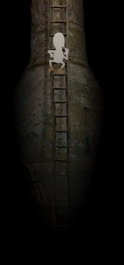

Das niedliche Spiel Samorost
Online-Spiele · Das Flash-Klick-Adventure Samorost von Jakub Dvorsky gehört zu den kleinen Dingen, die einen unendlich begeistern. Wie schon der erste Teil des Spiels, das Dvorsky im Rahmen seiner Abschlussarbeit an der Academy of Art, Architecture and Design in Prag entwickelte, verwöhnt die zweite Episode den Betrachter mit detailverliebten Bildern und einer wunderbaren Geschichte. Obendrein schafft es der Tscheche, im fantastischen zweiten Teil noch einen draufzusetzen.
Für seine Abschlussarbeit erhielt Jakub Dvorsky an seiner Kunsthochschule eine Note, die in Deutschland einer Zwei entspricht. Für das Flash-Spiel fotografierte er Bilder mit Steinen, Holz, Moos, verrosteten Gegenständen und ähnlichem Material und kombinierte diese zu eigenwilligen Collagen. Mithilfe der Flash-Technik verband er dann die einzelnen Fotomontagen mit 2D-Animationen und stellte sein Spiel kostenlos ins Internet. Überrascht vom Erfolg entschloss sich der Tscheche, einen zweiten Teil zu entwickeln.
Ein Wichtelmann auf Reisen
Im Mittelpunkt des Flash-Klick-Adventures Samorost steht ein kleiner Wichtelmann. Dieser lebt auf einem niedlichen und skurrilen Planeten. Während der Spieler im ersten Teil von Samorost eine Kollision mit einem anderen Planeten verhindern muss, startet er im zweiten Teil eine Rettungsaktion. Denn sein geliebter Hund wurde von fiesen Aliens entführt.
Großartig an dem Flash-Spiel ist seine Einfachheit. Zwar müssen im zweiten Teil erstmals auch Gegenstände miteinander kombiniert werden, indem man sie mit dem Mauszeiger auf dem Bildschirm verschiebt, die Hauptlösung jedes Rätsels klickt man aber auch in Samorost nacheinander zusammen. Dazu gehören ein wenig Kombinationssinn und Humor. Im Gegensatz zu anderen Adventures läuft auch Teil 2 von Samorost wiederum linear ab und erzählt so eine kleine Geschichte, die man selbst am Laufen hält.
Fazit
Was den ersten wie auch den zweiten Teil von Samorost so besonders macht, sind nicht nur liebevolle Details, die sich in Klängen und Bildern wiederfinden, sondern die gesamte Spielästhetik. Angefangen bei den Bildern über die Montagen bis hin zu den eigenwilligen Sounds samt Soundtrack verströmt das Spiel ein eigenartiges und bezauberndes Flair. Dieses zieht seine Spieler in eine kleine sagenhafte Parallelwelt. Ein humorvolles Spiel mit Suchtcharakter, einfach und tatsächlich: großes Kino!